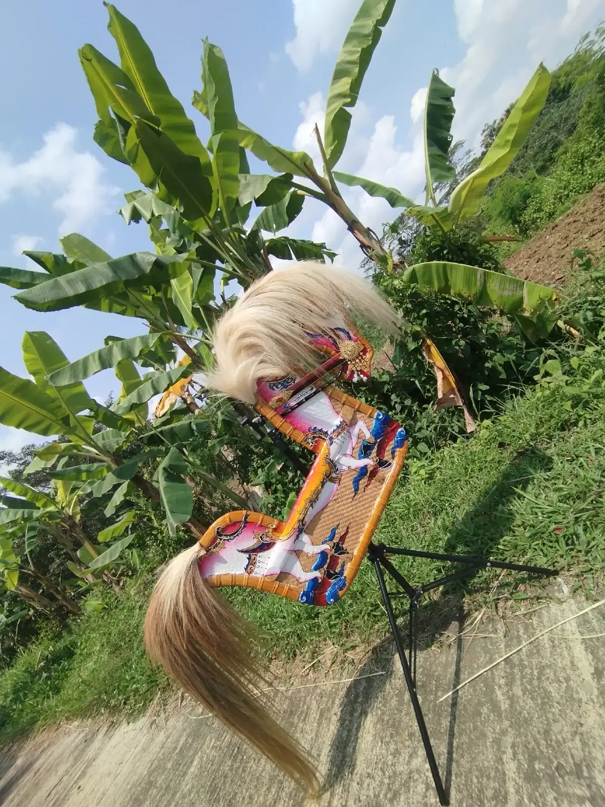
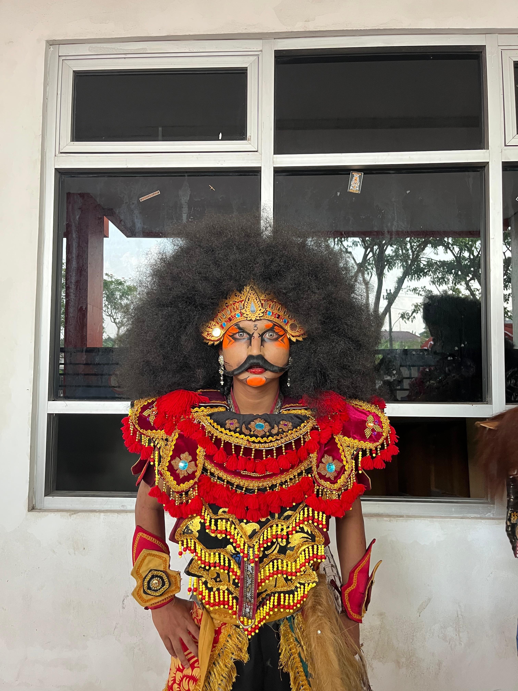
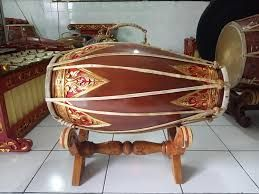
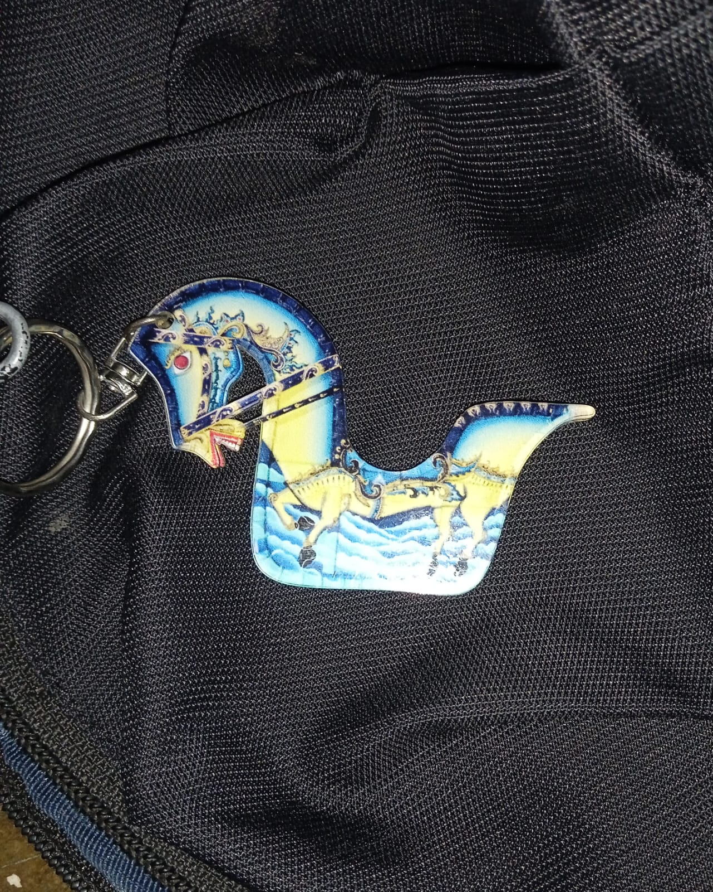

Katalog Kerajinan & Properti
Pilihan koleksi lengkap alat tari dan kerajinan buatan tangan para maestro pengrajin.

Jaran Kepang Super
Anyaman bambu petung pilihan dengan motif lukis naga/kuda tradisional. Dilengkapi rambut kuda asli.
Topeng Bujang Ganong
Ukiran kayu mahoni utuh dengan hiasan bulu ekor kuda asli. Ringan dan nyaman digunakan penari professional.
Pecut 2.5m
Pecut rajutan tali nilon tebal dengan gagang kayu ukir. Suara lecutan nyaring cocok untuk atraksi panggung.

Kostum Penari Lengkap
Set lengkap busana penari meliputi badong, payet, wig, jebres, dan giwang.

Kendang
Kendang dari kayu nangka tua dan kulit sapi pilihan. Menghasilkan suara dentuman merdu khas iringan tari.

Miniatur Jaran Kepang Souvenir
gantungan kunici berbentuk Jaran Kepang ukuran 30cm. Cocok untuk cenderamata budaya.
Barongan
Topeng barongan dengan rahang bergerak dan kain jubah panjang untuk tarian magis.
Set Gong
Alat musik tiup Slompret tradisi dipadukan gong besi mini untuk pelengkap instrumen iringan tari.